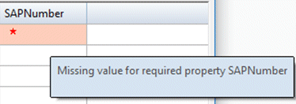

Working with registered custom properties
You use registered custom properties to quickly find your data. To learn more about using registered custom properties to find data, see Search based on properties.
You define registered custom properties in the propseed.txt file. The propseed.txt file is an ASCII text file that is used to populate values on the propseed.txt dialog box. To add values to the file, you can use a text editor, such as Notepad.
You can edit the propseed.txt file to customize lists for the following standard properties: title, category, keyword, and project name.
Changing the location of the propseed.txt file
By default, the propseed.txt file is located in Program Files\Siemens\Solid Edge 2023\Preferences. If you are a Solid Edge data management user, we recommend that you put the propseed.txt and template files in a shared location that can be accessed by the Fast Search configuration utility on the server, and by the Fast Search configuration (Solid Edge Options) on every CAD computer. This ensures that custom properties are consistent. To instruct Solid Edge to look for propseed.txt in a different location, including a folder on another machine on the network, do the following:
-
Choose File menu→Settings→Options→File Locations.
-
Select the Property seed file entry and click Modify.
-
On the Browse dialog box, specify the drive and folder containing the propseed.txt file.
-
After specifying the location, click Update.
Designate a property as required
You can indicate that a registered custom property is required in the common properties dialog box and in Design Manager by adding a required tag in the propseed.txt file. For example:
\\--------------------------
\\ Define custom properties
define SAPNumber;number;required;
Solid Edge displays the new required property as follows:

After you add the tag in the propseed.txt file, you must also select the option I have custom properties in my Solid Edge files that I want to perform fast search on. in Solid Edge Options→Manage tab→Custom Properties.